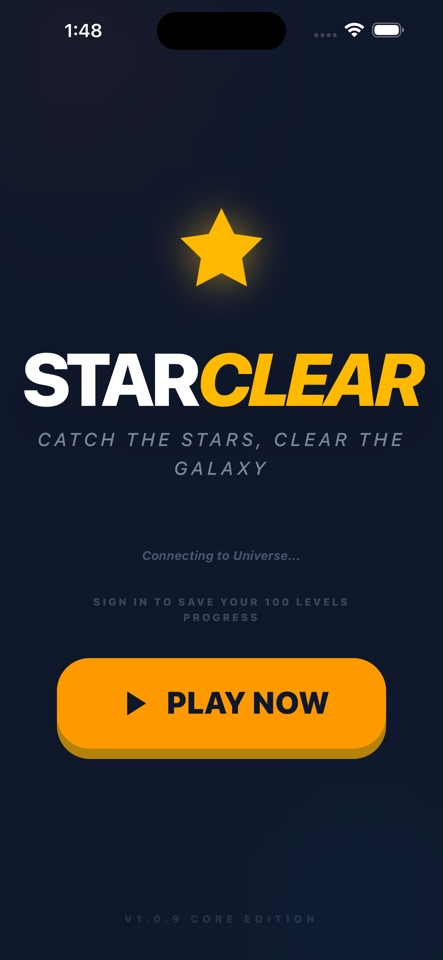
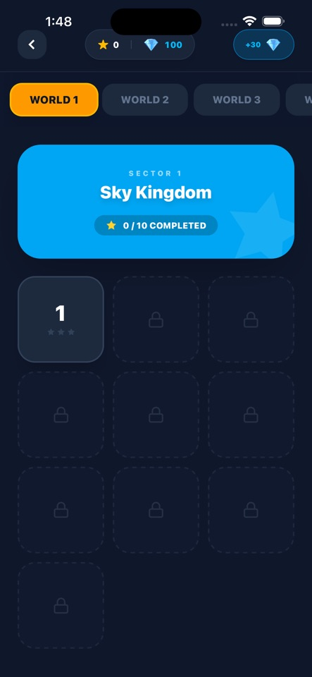

iOS GAME
Featured app · App Store 출시
Star Clear
떨어지는 별을 잡고 폭탄을 피하는 모바일 게임입니다. 게임 규칙과 UI를 기획하고 React·TypeScript로 구현했습니다. Vite·Capacitor로 iOS 앱을 빌드해 App Store에 출시했고, AdMob 광고도 연동했습니다.
코드를 앱으로 빌드하고 실제 사용자가 내려받을 수 있는 결과물로 출시했습니다.
02 / App development
기능 구현에서 빌드와 배포까지 이어간 결과물입니다.
Featured app · App Store 출시
떨어지는 별을 잡고 폭탄을 피하는 모바일 게임입니다. 게임 규칙과 UI를 기획하고 React·TypeScript로 구현했습니다. Vite·Capacitor로 iOS 앱을 빌드해 App Store에 출시했고, AdMob 광고도 연동했습니다.


From build to release
모바일 화면과 게임 흐름을 구현한 뒤 iOS 빌드와 스토어 등록까지 직접 진행했습니다. 공개된 앱과 소스 코드에서 결과물을 확인할 수 있습니다.
App Store 페이지 ↗다른 앱의 자세한 소개와 현재 출시 상태는 Kiteday 앱 목록에서 확인할 수 있습니다.